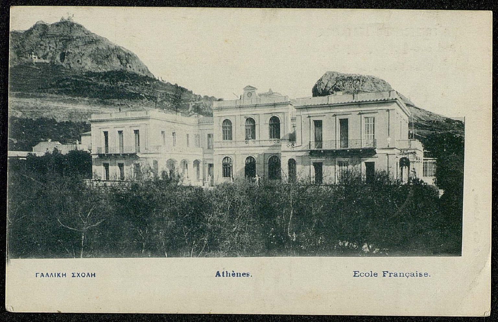
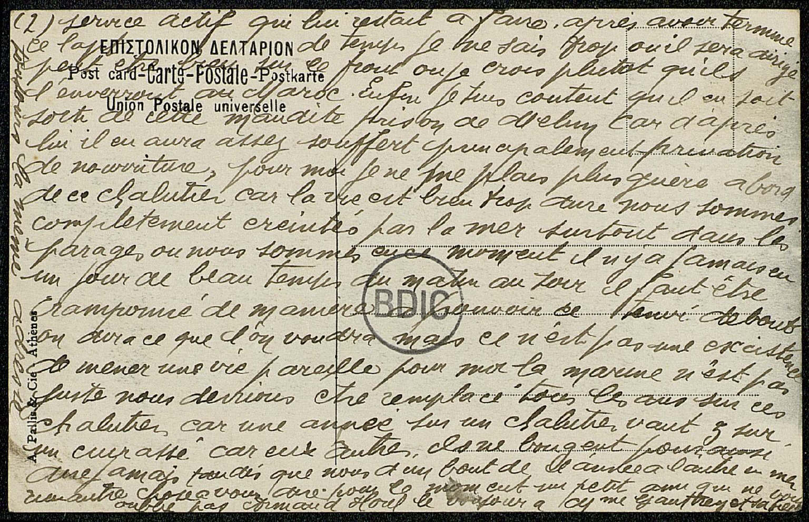
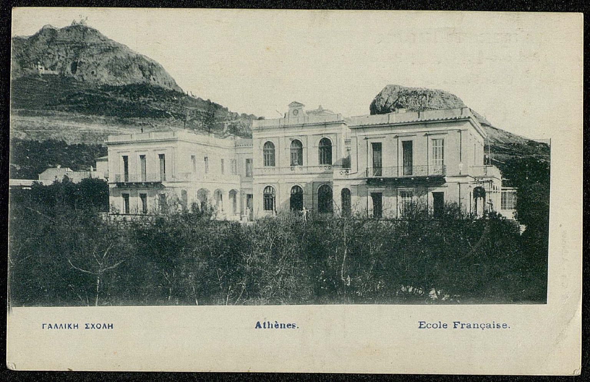
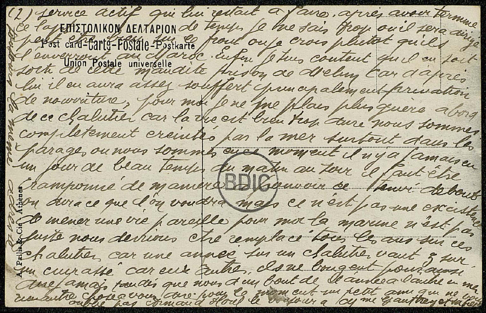

Bord en mer, environ de Corfou* , le 04 Novembre 1916
Comtesse*Comtesse L. de la Forest ,
Etant de retour de permission de quatorze jours, je m'empresse de vous faire parvenir de mes nouvelles, que je suis arrivé à bord en parfaite santé et désire qu'à l'arrivée de ces deux cartes que vous en êtes de même. j'ai passé neuf jours chez Mieur et Mme Bussière*Bussière rue Richepause(?) * , je me suis bien amusé pendant ce petit séjour parmi eux. j'ai été voir mes parents à Lorient* . j'y ai passé cinq jours, je vous prie de croire que je n'ai pas trouvé le temps long. par cette même occasion j'ai été voir mon frère à Melun* le mercredi 18 octobre pour la dernière fois car il doit sortir aujourd'hui 4 novembre. à sa sortie il doit se rendre à Montpellier* où là il sera dirigé sur Marseille* pour prendre le paquebot qui le mènera en Algérie* à Mers el-Kébir* à quatre kilomètres d'Oran* . j'y ai été plus de cent fois car la poudrière d'Oran* se trouve à Mers el-Kébir* . il est parti là-bas pour finir les cinq mois et vingt-deux jours de
(2) service actif qui lui restait à faire. après avoir terminé ce laps de temps je ne sais trop où il sera dirigé ; peut être bien sur le front ou je crois plutôt qu'ils l'enverront au Maroc* . Enfin, je suis content qu'il en soit sorti de cette maudite prison de Melun* car d'arpès lui il en aura assez souffert principalement [de la] privation de nourriture. pour moi je ne me plais plus guère à bord de ce chalutier car la vie est bien trop dure. nous sommes complètement éreintés par la mer ; surtout dans les parages où nous sommes en ce moment. il n'y a jamais eu un jour de beau temps ; du matin au soir il faut être cramponné de manière à pouvoir ce tenir debout. on dira ce que l'on voudra mais ce n'est pas une existence de mener une vie pareille. pour moi la marine n'est pas juste, nous devrions être remplacés tous les ans sur ces chalutiers car une année sur un chalutier vaut trois sur un cuirassé car eux autres, ils ne bougent pour ainsi dire jamais tandis que nous sommes d'un bout de l'année à l'autre en mer.
rien autre chose à vous dire pour le moment, un petit ami qui ne vous oublie pas,
[PS:] le bonjour à Mme Gauthier*Madame Gauthier et sa fille(?) toujours la même adresse.

 


